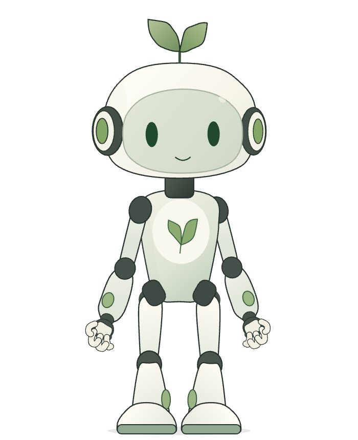
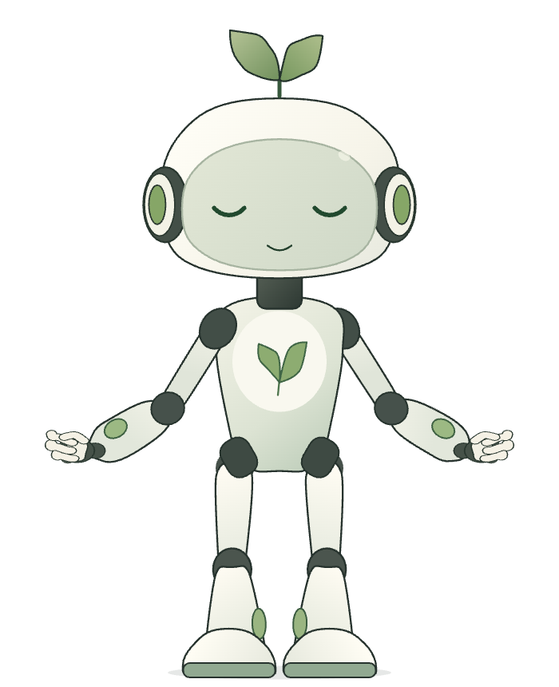

Sara.MCommunity member
“I managed to finish all my suggested sessions this week. Reading feels easier already and I’m spending less time on short videos.”
Visit communityDeepSprout helps you spend less time scrolling through a personal roadmap, focused activities, and a supportive community—one small step at a time.
You’re growing with others.
Find encouragement in the community.
Everything you do in DeepSprout lands in one of these.
Your week
Loading your week…
Join outdoor moments, workshops, and social activities that help you disconnect from screens and reconnect with what matters.
Explore activitiesThe path every DeepSprout member walks, one step at a time.

“I managed to finish all my suggested sessions this week. Reading feels easier already and I’m spending less time on short videos.”
Visit community“I set a 10-minute timer, remove distractions, and choose a specific page goal. It’s simple but surprisingly effective!”
Visit community“Today marks 30 days of using DeepSprout. My focus sessions, garden and mood have all improved. Grateful for this community!”
Visit communityKeep building healthier habits and more meaningful moments, one step at a time.
